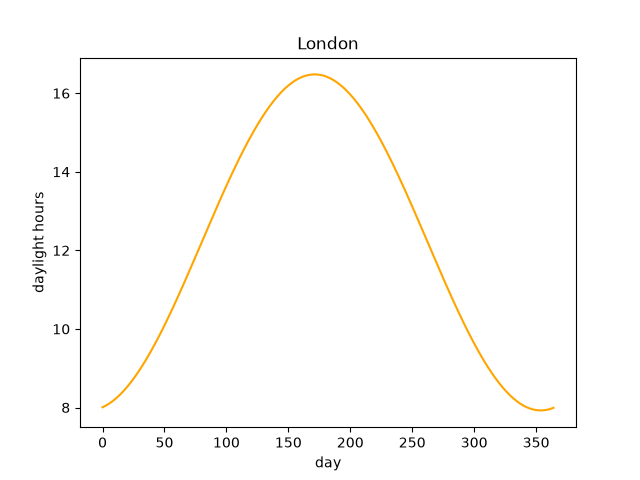
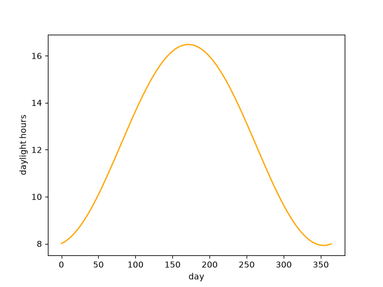

Note
Go to the end to download the full example code.
Coding shortcuts#
Matplotlib's primary and universal API is the Axes interface. While it is clearly structured and powerful, it can sometimes feel overly verbose and thus cumbersome to write. This page collects patterns for condensing the code of the Axes-based API and achieving the same results with less typing for many simpler plots.
Note
The pyplot interface is an alternative more compact interface, and was historically modeled to be similar to MATLAB. It remains a valid approach for those who want to use it. However, it has the disadvantage that it achieves its brevity through implicit assumptions that you have to understand.
Since it follows a different paradigm, switching between the Axes interface and the pyplot interface requires a shift of the mental model, and some code rewrite, if the code develops to a point at which pyplot no longer provides enough flexibility.
This tutorial goes the other way round, starting from the standard verbose Axes interface and using its capabilities for shortcuts when you don't need all the generality.
Let's assume we want to make a plot of the number of daylight hours per day over the year in London.
The standard approach with the Axes interface looks like this.
import matplotlib.pyplot as plt
import numpy as np
day = np.arange(365)
hours = 4.276 * np.sin(2 * np.pi * (day - 80)/365) + 12.203
fig, ax = plt.subplots()
ax.plot(day, hours, color="orange")
ax.set_xlabel("day")
ax.set_ylabel("daylight hours")
ax.set_title("London")
plt.show()

Note that we've included plt.show() here. This is needed to show the plot window
when running from a command line or in a Python script. If you run a Jupyter notebook,
this command is automatically executed at the end of each cell.
For the rest of the tutorial, we'll assume that we are in a notebook and leave this out for brevity. Depending on your context you may still need it.
If you instead want to save to a file, use fig.savefig("daylight.png").
Collect Axes properties into a single set() call#
The properties of Matplotlib Artists can be modified through their respective
set_*() methods. Artists additionally have a generic set() method, that takes
keyword arguments and is equivalent to calling all the respective set_*() methods.
ax.set_xlabel("day")
ax.set_ylabel("daylight hours")
can also be written as
ax.set(xlabel="day", ylabel="daylight hours")
This is the most simple and effective reduction you can do. With that we can shorten the above plot to

This works as long as you only need to pass one parameter to the set_*() function.
The individual functions are still necessary if you want more control, e.g.
set_title("London", fontsize=16).
Not storing a reference to the figure#
Another nuisance of fig, ax = plt.subplots() is that you always create a fig
variable, even if you don't use it. A slightly shorter version would be using the
standard variable for unused value in Python (_): _, ax = plt.subplots().
However, that's only marginally better.
You can work around this by separating figure and Axes creation and chaining them
ax = plt.figure().add_subplot()
This is a bit cleaner logically and has the slight advantage that you could set
figure properties inline as well; e.g. plt.figure(facecolor="lightgoldenrod").
But it has the disadvantage that it's longer than fig, ax = plt.subplots().
You can still obtain the figure from the Axes if needed, e.g.
ax.figure.savefig("daylight_hours.png")
The example code now looks like this:

Define Axes properties during axes creation#
The set_* methods as well as set modify existing objects. You can
alternatively define them right at creation. Since you typically don't instantiate
classes yourself in Matplotlib, but rather call some factory function that creates
the object and wires it up correctly with the plot, this may seem less obvious. But
in fact you just pass the desired properties to the factory functions. You are likely
doing this already in some places without realizing. Consider the function to create
a line
ax.plot(x, y, color="orange")
This is equivalent to
line, = ax.plot(x, y)
line.set_color("orange")
The same can be done with functions that create Axes.
ax = plt.figure().add_subplot(xlabel="day", ylabel="daylight hours", title="London")
ax.plot(day, hours, color="orange")

Important
The Axes properties are only accepted as keyword arguments by
Figure.add_subplot, which creates a single Axes.
For Figure.subplots and pyplot.subplots, you'd have to pass the properties
as a dict via the keyword argument subplot_kw. The limitation here is that
such parameters are given to all Axes. For example, if you need two subplots
(fig, (ax1, ax2) = plt.subplots(1, 2)) with different labels, you have to
set them individually.
Defining Axes properties during creation is best used for single subplots or when all subplots share the same properties.
Using implicit figure creation#
You can go even further by tapping into the pyplot logic and use pyplot.axes to
create the axes:

Warning
When using this, you have to be aware of the implicit figure semantics of pyplot.
plt.axes() will only create a new figure if no figure exists. Otherwise, it
will add the Axes to the current existing figure, which is likely not what you
want.
Not storing a reference to the Axes#
If you only need to visualize one dataset, you can append the plot command directly to the Axes creation. This may be useful e.g. in notebooks, where you want to create a plot with some configuration, but as little distracting code as possible:

Total running time of the script: (0 minutes 2.255 seconds)